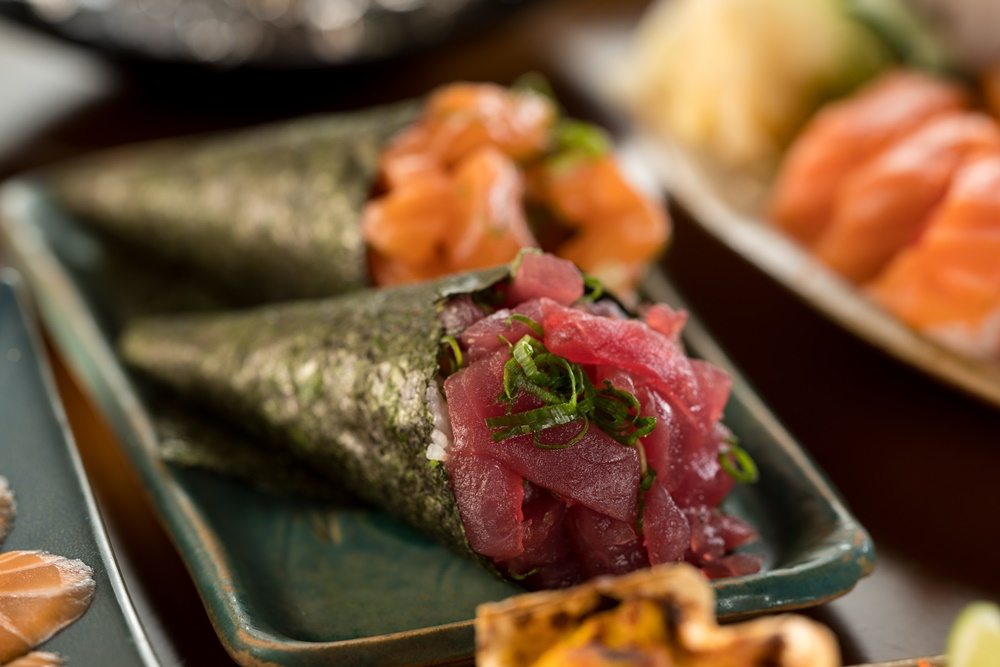

Bem-vindo ao HashiHub
O melhor da culinária japonesa, direto na sua casa. Sabores autênticos, ingredientes frescos e a tradição milenar do Japão.
Produtos em Destaque
Conheça nossos pratos mais populares

Hot Roll
O nome não nega: o hot roll é uma espécie de sushi empanado e frito após ser enrolado. Com diferentes sabores, ele traz um agridoce agradável e conquista os mais diversos paladares.

Temaki
O cone de algas com gohan e recheios de peixe, frutas, legumes ou shimeji, também está entre os queridinhos dos amantes da culinária japonesa. O temaki é uma opção deliciosa e cheia de sabor.

Sushi
O sushi é provavelmente o prato mais famoso do cardápio japonês. Com gohan e uma infinidade de recheios, tradicionais ou veganos, ele agrada a todos os gostos e promete uma explosão de sabor na boca.
Nossas Especialidades
Nossa variedade de pratos japoneses
Sushi & Sashimi
Peixes frescos e frutos do mar preparados com técnicas tradicionais japonesas.
Hot Rolls
Sushi empanado e frito,
uma fusão perfeita entre
tradição e
inovação.
Yakisoba
Macarrão japonês refogado com legumes frescos e proteínas selecionadas.
Nossa História
O HashiHub nasceu da paixão pela autêntica culinária japonesa e do desejo de compartilhar sabores únicos com você.
Com ingredientes frescos e técnicas tradicionais, preparamos cada prato com carinho e dedicação. Nossa missão é levar até sua casa a verdadeira experiência gastronômica japonesa.
500+
Pedidos Entregues
4.8★
Avaliação Média